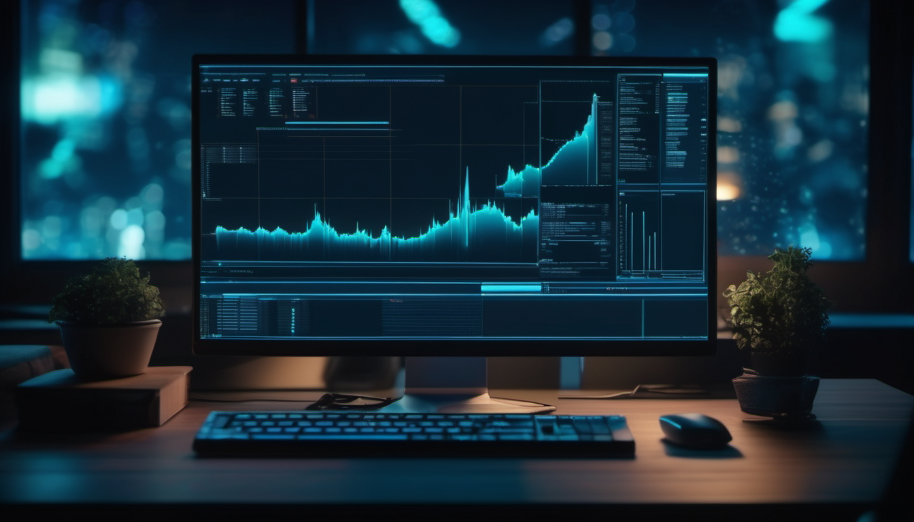
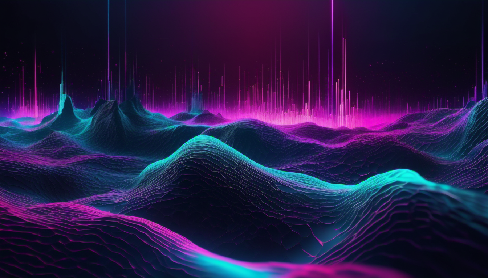
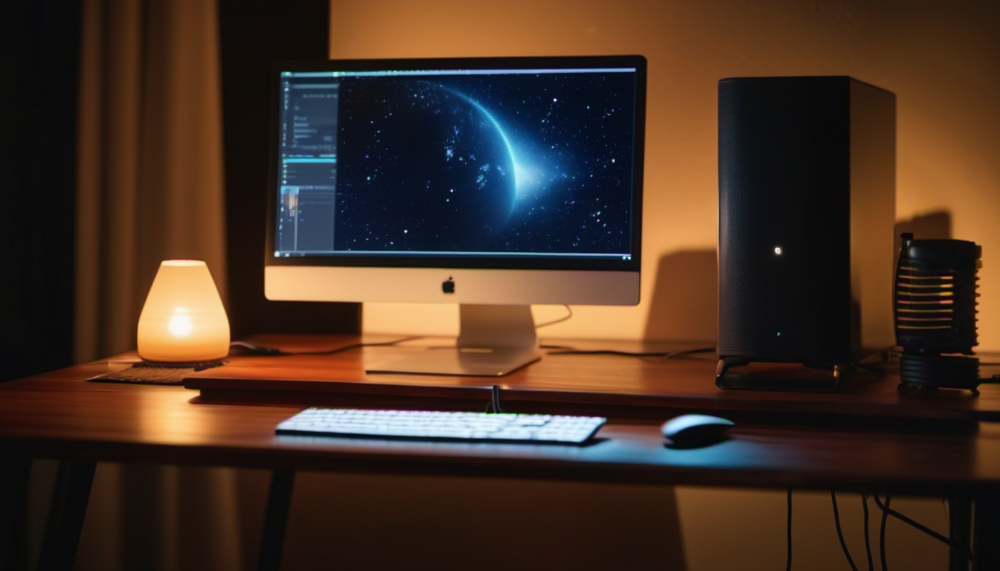

Versuchs-Übersicht — automatisierte Produktion von Workshop-Inhalten mit ComfyUI. Bilder, Hintergründe, Vorlagen, vertonte Videos.
Versuch 1Erstes echtes KI-Video (AnimateDiff)
Kann AnimateDiff auf dem Mac echtes bewegtes Video erzeugen? Antwort: ja — mit v3-Adapter-LoRA und beta-Schedule sqrt_linear. Ohne diese Pflicht-Settings liefert es abstraktes Farbmuster.
Drei feste Workflows angelegt und per ComfyUI-API aufgerufen — Hintergrund (SDXL), Szenen-Bild (SDXL), Text-zu-Video (AnimateDiff). Bibliothek-Konzept funktioniert; SDXL-Hintergründe sind produktionsreif.
Hintergrund: Terminal-Workspace

Hintergrund: Datenfluss (abstrakt)

Hintergrund: Schreibtisch nachts

Text-zu-Video Terminal
funktioniert technisch, bleibt aber atmosphärisch-abstrakt
DreamShaper 8 + AnimateDiff Lightning (8-Step-Distillation) + ElevenLabs-Vertonung (OPA-Voice) end-to-end. Erstmals erkennbare, detailreiche Szene mit integriertem Audio — ein Skript erzeugt Audio und Video und muxt sie.